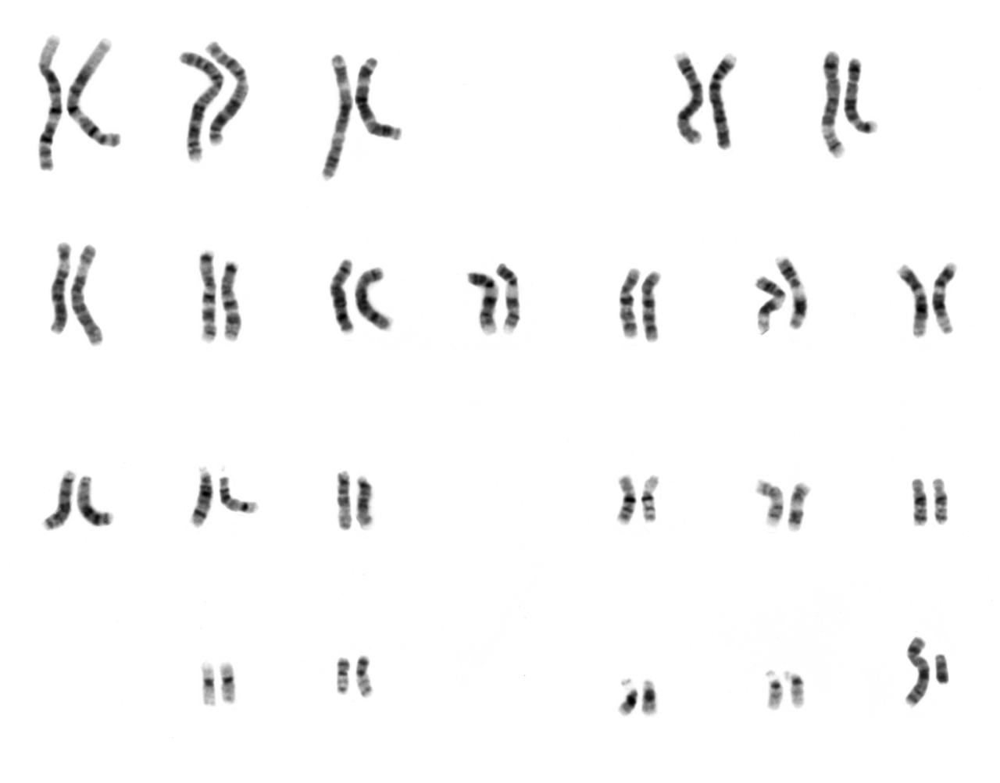
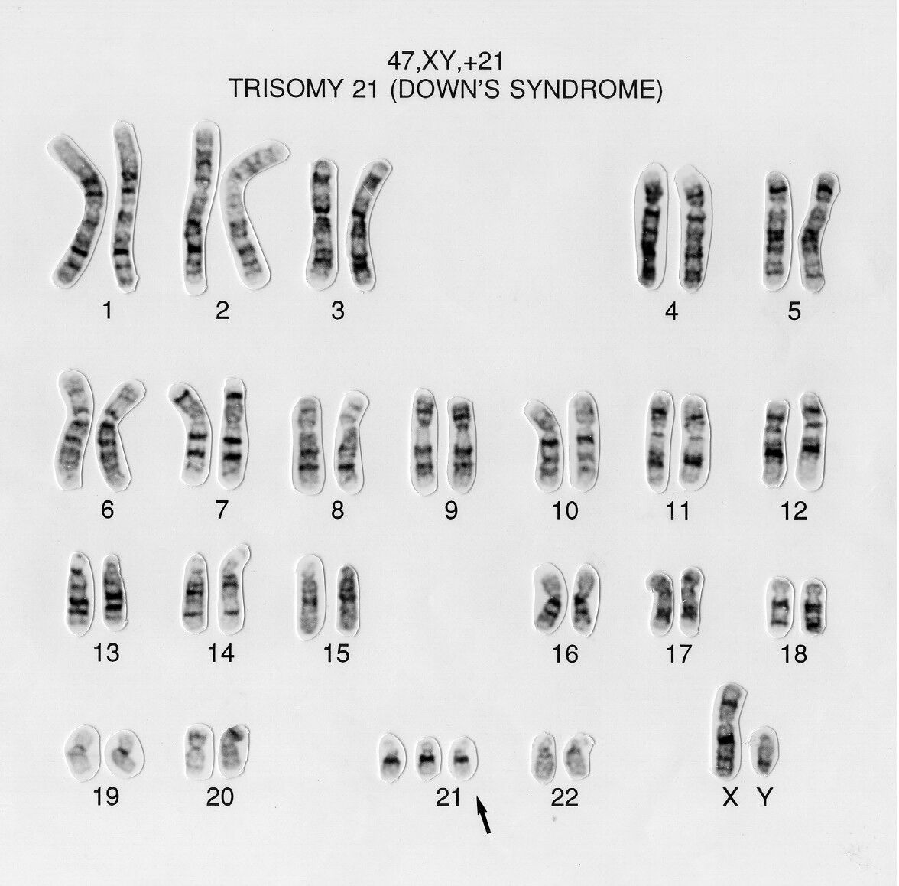

Read the slide. Name every chromosome. Write the nomenclature.
A focused, exam-weighted course for the ASCP BOC CG(ASCP)/CG(ASCPi) examination — built around the skills that actually carry the exam: metaphase selection, chromosome identification, karyogram and abnormality interpretation, ISCN, FISH, and laboratory operations.
How this course is weighted
The course mirrors the four content areas of the official CG(ASCP) content guideline. Chromosome Analysis & Imaging is the deepest area by a clear margin — that is exactly where the exam and the bench put the most weight.
Percentages reflect the published category structure of the ASCP BOC content guideline. Always confirm the current guideline and your exam's blueprint at the time you sit, as ASCP updates content outlines periodically.
Progress dashboard
Your completion is saved in this browser (via localStorage). Mark a module complete at the bottom of each section; jump anywhere from here or the sidebar.
How to Use This Course & CG(ASCP) Exam Orientation
Foundations Sets up all four domainsLearning objectives
- Describe the four content domains of the CG(ASCP) examination and their relative weighting.
- Recognize the question styles the exam favors: recall, application, interpretation, and troubleshooting.
- Use the study tools in this course (cards, quizzes, flashcards, cases, interactive exercises, progress tracking) deliberately.
- Adopt a consistent reasoning workflow for image interpretation, ISCN writing, and FISH scoring.
The four content domains
Every item on the exam maps to one of four areas. The proportions below come from the published ASCP BOC content guideline category structure. Spend study time in proportion to weight, and remember that the largest area is also the one with the steepest skill curve.
| Domain | Approx. weight | What it really tests |
|---|---|---|
| Chromosome Analysis & Imaging | 45–50% | Metaphase quality, chromosome identification, karyogram review, numerical & structural abnormality recognition, mosaicism vs. artifact, ISCN, imaging. |
| Specimen Prep, Culture & Harvest | 20–25% | Specimen suitability, mitogens & media, culture failure, colcemid/hypotonic/fixation logic, slide quality. |
| Molecular Cytogenetic Testing | 15–25% | FISH probe strategies, signal-pattern interpretation, scoring/cutoffs, controls, interphase vs. metaphase, microarray basics. |
| Laboratory Operations | 10–15% | Safety, labeling & chain of identity, QC/QA, proficiency testing, accreditation concepts, confidentiality, ethics, competency. |
Nearly half the exam sits in one domain. If you can reliably identify chromosomes, separate true findings from artifact, and write ISCN, you are working the highest-yield real estate on the test. This course deliberately makes Modules 6–14 the deepest.
Question styles you will meet
- Recall — definitions and facts ("Which group contains the acrocentric chromosomes 13, 14, 15?").
- Application — apply a rule to a scenario ("A metaphase has every chromosome separated but fuzzy banding — countable or analyzable?").
- Interpretation — read an image or result ("Three signals with an enumeration probe means…").
- Troubleshooting — diagnose a process failure ("Cultures grew but chromosomes are short and over-contracted — what changed?").
Studying by pure memorization. The exam punishes flashcard-only prep on the imaging domain because the questions show you something and ask you to decide. Pair memorization with the interactive exercises and cases in this course so you practice the decision, not just the fact.
How to use the tools in this course
Study cards & callouts
Collapsible cards hold detail you can expand on demand. Watch for the five recurring callouts: Exam Pearl, Common Pitfall, Lab Reality, ISCN Rule, and Troubleshooting.
Quizzes & cases
Every module has a quiz with immediate feedback explaining both the right answer and why the tempting wrong answers fail. Cases simulate real bench reasoning end-to-end.
Interactive exercises
Five image-based drills: group identification, chromosome ID, abnormality recognition, ISCN construction, and FISH pattern reading.
Flashcards & progress
A categorized flashcard deck near the end. Your "mark complete" status is saved in this browser so you can return where you left off.
Where a number depends on your laboratory's standard operating procedure (SOP), accreditation checklist, specimen type, or case type, this course says so rather than inventing a universal rule. Treat "exam concept" statements as general principles and your lab's SOP as the authority for daily work.
Four reasoning workflows to internalize early
These reappear throughout the course and are collected at the end for quick reference:
- Image interpretation: assess quality → count → identify each chromosome → compare homologs → flag candidate abnormalities → confirm true vs. artifact.
- ISCN writing: count → sex chromosomes → abnormality type → chromosome(s) involved → breakpoints → clone/cell numbers.
- FISH scoring: confirm controls → identify probe strategy → score adequate nuclei/cells → compare to cutoff → interpret pattern.
- Troubleshooting: define the defect → list process steps that produce it → change one variable → document.
Key takeaways
- Four domains; Chromosome Analysis & Imaging dominates (45–50%).
- The exam rewards decisions on images and results, not memorization alone.
- Use cards, quizzes, exercises, and cases together; let the workflows guide your reasoning.
- "Exam concept" = general principle; your SOP and the current ISCN reference govern practice.
Specimen Collection, Transport, Accessioning & Test Priority
Pre-analyticLearning objectives
- Match common specimen types to their appropriate anticoagulant, container, and typical cytogenetic use.
- Explain why anticoagulant choice and transport conditions make or break a culture.
- State the principles of accessioning and chain of identity using two unique identifiers.
- Triage specimens by clinical urgency and viability.
Specimen types at a glance
| Specimen | Usual anticoagulant / container | Typical use | Notes |
|---|---|---|---|
| Peripheral blood | Sodium heparin (green top) | Constitutional studies; some heme studies | Needs a mitogen (e.g., PHA) for T-cell stimulation in constitutional work. |
| Bone marrow | Sodium heparin | Hematologic malignancy | Direct/short-term cultures; usually unstimulated to capture the dividing neoplastic clone. |
| Amniotic fluid | Sterile conical tube | Prenatal constitutional | In-situ (coverslip) or flask culture; protect from temperature extremes. |
| Chorionic villi (CVS) | Sterile transport medium | Prenatal constitutional | Direct + culture; maternal cell contamination is a key concern. |
| Products of conception / tissue | Sterile saline or medium (not formalin) | Pregnancy loss, dysmorphology | Fibroblast culture; viability often limited. |
| Solid tumor | Sterile medium | Tumor cytogenetics | Disaggregation required; sterility critical. |
EDTA (lavender top) is the wrong tube for chromosome culture. EDTA chelates the divalent cations cells need and is generally lethal to cultures. Blood and marrow for cytogenetics go in sodium heparin. A lavender-top sample arriving for karyotype is a classic "reject or call the floor" scenario.
Transport and stability
The aim is to deliver living, dividing-capable cells. General principles the exam expects:
- Keep it viable, not frozen. Cytogenetic specimens are transported at room temperature or refrigerated per SOP — never frozen, which destroys cells. (Freezing is for DNA/molecular aliquots, not culture.)
- Speed matters. Longer transit lowers viability and mitotic yield. Prolonged delay is a leading cause of culture failure.
- Sterility matters. Contamination introduced at collection or transport can overgrow a culture.
- Avoid clotting. A clotted blood or marrow specimen traps the cells you need.
Exact acceptable transport temperatures, maximum transit times, and minimum volumes are SOP- and specimen-specific. A marrow that is borderline-old may still be set up (with documentation) because re-collecting marrow is invasive. The bench judgment is "maximize the chance of success and document deviations," not "reject on a rigid clock."
Accessioning & chain of identity
Identity is everything in a result that drives clinical decisions. Universal principles:
- Use two unique patient identifiers (e.g., name + date of birth or medical record number) and verify the requisition matches the container label.
- Assign an accession/case number that follows the specimen through culture, harvest, slide making, analysis, and reporting.
- Label every tube, flask, slide, and image to preserve an unbroken chain of identity. An unlabeled flask in an incubator is a non-reportable specimen.
- Record specimen type, collection time, and clinical indication — the indication drives culture setup and analysis depth.
Test priority & triage
Not all specimens are equal in urgency or fragility:
- Clinical urgency: prenatal results, suspected acute leukemia at diagnosis, and pre-transplant studies are typically prioritized.
- Viability/limited material: products of conception and small biopsies may have one chance — set up promptly and conservatively.
- Indication drives setup: a constitutional blood needs mitogen-stimulated culture; a marrow for leukemia needs unstimulated cultures that capture the dividing clone.
Case 2.1 — The lavender-top problem
The requisition asks for a karyotype. Walk through what you do and why before opening the answer.
Reveal reasoning & answer
Problem 1 — anticoagulant. EDTA is generally lethal to lymphocyte cultures. The correct tube is sodium heparin. This is the primary reason to question the specimen.
Problem 2 — age. ~30 h at room temperature reduces viability; combined with EDTA, the chance of a successful 72-h stimulated culture is low.
Right action: Do not silently proceed. Notify the ordering provider/collecting site, document the discrepancy, and request a recollect in sodium heparin. If recollection is impossible and the clinical need is high, your SOP may allow an attempt with the deviation documented — but expectations for success should be communicated.
Common mistake: Setting it up quietly "to be helpful." That risks a delayed failed result and a lost window, which is worse than an early, documented call for the correct specimen.
Key takeaways
- Sodium heparin for blood/marrow culture; EDTA kills cultures.
- Transport viable cells: room temp/refrigerated per SOP, fast, sterile, unclotted — never frozen.
- Two identifiers and an unbroken chain of identity from tube to report.
- Triage by urgency and viability; the clinical indication drives culture setup.
Culture Systems, Cell Growth, Media, Contamination & Culture Failure
Analytic setupLearning objectives
- Distinguish stimulated from unstimulated cultures and know when each is used.
- Name the role of mitogens (PHA and B-cell mitogens) and core media components.
- List the major causes of culture failure and contamination and how to recognize them.
- Connect incubator conditions (temperature, CO₂, humidity) to culture health.
Stimulated vs. unstimulated — the central decision
| Culture type | Mitogen? | Typical use | Logic |
|---|---|---|---|
| Stimulated lymphocyte | Yes — PHA (phytohemagglutinin) | Constitutional blood (e.g., 72 h) | Resting T-lymphocytes must be pushed into division to yield metaphases. |
| B-cell mitogen-stimulated | Yes — B-cell mitogens (e.g., DSP30+IL-2, TPA, pokeweed) | CLL and other mature B-cell disorders | The abnormal B-cells often will not divide without a B-directed mitogen. |
| Unstimulated (direct / short-term) | No | Bone marrow & other neoplastic specimens | The dividing population is the tumor; adding a mitogen would dilute it with normal cells. |
PHA stimulates T-lymphocytes. If a question gives you constitutional blood and no mitogen, expect culture failure (no metaphases). If it gives you a CLL workup and only PHA, expect that the abnormal B-cell clone may be missed — you need a B-cell mitogen.
What is in the culture system
- Base medium (e.g., RPMI-type for blood/marrow) supplies nutrients and buffering.
- Serum (commonly fetal bovine serum) supplies growth factors.
- L-glutamine as an amino-acid source; antibiotics (e.g., penicillin/streptomycin) to limit contamination.
- Mitogen as appropriate (above).
- Buffering: bicarbonate systems need a CO₂ incubator to hold pH; some media use alternative buffers.
Incubator conditions
Standard mammalian culture conditions the exam expects you to associate with healthy growth:
- Temperature drift stalls or kills growth.
- CO₂ failure shifts pH (medium turns purple/alkaline or yellow/acidic), harming cells.
- Low humidity concentrates the medium by evaporation, stressing cells.
Culture failure & contamination
Causes of culture failure
- Insufficient, clotted, or nonviable specimen
- Wrong anticoagulant (EDTA) or transport delay
- Missing/incorrect mitogen for the cell type
- Old, contaminated, or wrong medium
- Incubator failure (temp/CO₂)
- Low cellularity / few dividing cells
Signs of contamination
- Turbid medium; abrupt pH/color change
- Bacterial/fungal overgrowth visible under the scope
- Sudden loss of mitotic activity
- Mycoplasma: insidious — may not turn the medium turbid but degrades growth and morphology; detected by specific testing, not by eye.
No growth / no metaphases. Check, in order: was the right mitogen used? was the specimen viable and the anticoagulant correct? was the incubator (temp/CO₂) within range and the medium current? was there enough time/cellularity? Change one variable per backup culture so you can attribute the cause.
Labs hedge against failure by setting up multiple, independent cultures (different flasks/conditions/harvest times) for important or limited specimens. Exact incubation times, mitogen concentrations, and the number of backup cultures are SOP-specific and validated locally.
Case 3.1 — CLL with a "normal" result
The karyotype is reported 46,XY in all cells, but the clinical team expected an abnormality. What is the most likely explanation?
Reveal reasoning & answer
Likely cause: PHA stimulates T-cells. In CLL the malignant cells are B-lymphocytes, which often do not respond to PHA. The dividing cells captured were normal T-cells, producing a normal-looking karyotype that does not represent the clone.
Fix: Use a B-cell mitogen (e.g., DSP30 + IL-2) culture, and/or reflex to FISH panels appropriate for CLL, which do not depend on dividing cells.
Common mistake: Reporting "normal" as reassurance without recognizing the culture strategy could not detect the relevant clone.
Key takeaways
- PHA = T-cells; B-cell disorders need B-cell mitogens; marrow/tumor cultures are usually unstimulated.
- Healthy growth needs ~37 °C, correct CO₂/pH, and humidity.
- Failure causes cluster around specimen, mitogen, incubator, and medium.
- Mycoplasma is the sneaky contaminant — tested for, not seen by eye.
Harvesting, Hypotonic, Fixation, Slide Dropping & Slide Quality
Bridge to imagingLearning objectives
- Sequence the harvest: colcemid arrest → hypotonic → fixation → slide making.
- Explain how colcemid exposure time trades metaphase yield against chromosome length/resolution.
- Describe the purpose of hypotonic treatment and fixative, and the failure modes of each.
- Relate environmental conditions (humidity/temperature) to spreading quality.
The harvest sequence
- Colcemid (a spindle inhibitor) arrests dividing cells in metaphase by preventing spindle formation, accumulating metaphases.
- Hypotonic solution (commonly ~0.075 M KCl) swells the cells so chromosomes can spread apart when dropped.
- Fixative — Carnoy's, 3:1 methanol:glacial acetic acid — preserves and hardens chromosomes and removes cytoplasm; performed as several changes of fresh, cold fixative.
- Slide making (dropping) releases fixed cells onto slides; controlled spreading produces analyzable metaphases.
Colcemid time is a trade-off. Longer exposure → more metaphases but shorter, more contracted chromosomes (lower band resolution). Shorter exposure → fewer metaphases but longer chromosomes (higher resolution). When a case needs high-resolution banding (e.g., a subtle structural question), the lab shortens colcemid exposure to lengthen chromosomes.
Hypotonic and fixation failure modes
| Step | If too little | If too much |
|---|---|---|
| Hypotonic | Poor swelling → overlapped, crowded chromosomes that will not separate. | Over-swelling/lysis → chromosome scatter and loss; cells burst, count drops below 46. |
| Fixation | Residual cytoplasm → hazy/grainy background, "cytoplasm tags" obscuring chromosomes. | Excessively harsh/old fixative → brittle, poorly banding chromosomes. |
| Colcemid | Few metaphases (low mitotic index). | Short, fuzzy chromosomes; bands collapse together. |
Too many "45-count" cells? Random single-chromosome loss across many cells points to technical scatter (over-hypotonic, hard dropping) rather than a true monosomy. A real monosomy is consistent — the same chromosome missing in a clone of cells. Distinguishing artifactual loss from true monosomy is a recurring judgment (revisited in Module 13).
Slide making & the role of the environment
Spreading is famously sensitive to humidity and temperature. These are the variables techs adjust day to day:
- Higher humidity / warmth generally increases spreading (fixative evaporates slower, cells flatten more).
- Low humidity / cold/dry air tends to reduce spreading → overlapped chromosomes.
- Drop height, slide angle, slide temperature, and cell concentration all influence the result.
Many labs run a humidified drop chamber or adjust technique seasonally because winter heating dries the air and ruins spreading. The "right" colcemid time, hypotonic time, and dropping technique are validated per lab and per specimen type — there is no single universal number.
Case 4.1 — "All my chromosomes look short"
Plenty of cells, but you cannot resolve fine bands. What changed, and what do you adjust?
Reveal reasoning & answer
Most likely cause: Colcemid exposure was too long. More metaphases accumulated, but they are over-contracted — great count, poor resolution.
Adjustment: Shorten colcemid exposure (and/or use a synchronization/short-harvest technique) to capture longer prometaphase/early-metaphase chromosomes with higher band resolution. Optimize hypotonic and dropping to keep spreading clean.
Common mistake: Blaming banding/staining first. Staining can be re-done, but if the chromosomes are physically short, no amount of re-banding adds resolution — the fix is upstream at harvest.
Key takeaways
- Harvest order: colcemid → hypotonic → fixative (3:1 methanol:acetic acid) → drop.
- Colcemid time trades yield for length/resolution.
- Hypotonic too long → scatter/loss; too short → overlap. Fixation removes cytoplasm.
- Spreading is driven by humidity & temperature; random loss is usually artifact, not monosomy.
Chromosome Banding & Staining, with G-Banding as the Core Technique
Foundation for every karyotypeLearning objectives
- Explain what G-banding (GTG) does and why dark vs. light bands differ biologically.
- Recognize over- and under-trypsinization on sight and trace each to the fix.
- Match alternative bands (R, C, Q, NOR/Ag, DAPI) to what they highlight and when they are used.
- Connect banding to the band-level addresses you will name with ISCN later.
G-banding (GTG): the workhorse
GTG = G-bands by Trypsin using Giemsa. Slides are briefly digested with trypsin (a protease) and then stained with Giemsa. The result is the familiar pattern of dark and light transverse bands that lets you tell chromosomes apart.
- Dark G-bands — AT-rich, gene-poor, late-replicating chromatin.
- Light (pale) G-bands — GC-rich, gene-rich, early-replicating chromatin.
Each chromosome has a reproducible banding pattern—that reproducibility is what makes identification possible. Memorize the biology behind it: dark = AT-rich, late-replicating, gene-poor; light = GC-rich, early-replicating, gene-rich. This single fact answers many band-theory items.
Trypsin is a Goldilocks step. Over-trypsinized chromosomes look swollen, pale, and "fuzzy/fluffy" with bands washed out and edges indistinct. Under-trypsinized chromosomes stain too dark and solid, with bands that fail to separate. Both destroy analyzability even when the harvest was perfect.
The major banding / staining methods
| Method | What it shows | Typical use |
|---|---|---|
| G-banding (GTG) | Dark/light band pattern along the whole chromosome. | Routine karyotyping — the default in clinical labs. |
| R-banding | The reverse pattern of G (G-dark regions appear light). Telomeric/terminal regions stain well. | Evaluating chromosome ends/telomeres that stain pale on G-banding. |
| C-banding | Constitutive heterochromatin: centromeres and the qh regions of 1, 9, 16, plus distal Yq. | Confirming heterochromatic variants/polymorphisms and centromere position. |
| Q-banding | Fluorescent bands (quinacrine) that parallel G-bands; distal Yq fluoresces brightly (the "Y body"). | Heteromorphism studies; rapid Y identification. |
| NOR / AgNOR (silver) | Nucleolar organizer regions on the satellite stalks of acrocentrics (p-arms of 13, 14, 15, 21, 22). | Evaluating acrocentric short arms / satellite associations. |
| DAPI | AT-rich regions (fluorescent); bright at heterochromatin — the counterstain seen in most FISH. | Counterstain for FISH; band-like orientation under fluorescence. |
Bands give every locus an address: arm (p/q), region, band, sub-band — read outward from the centromere. So 17q21 means chromosome 17, long arm, region 2, band 1. You will build and read these coordinates constantly in Modules 9 and 14; banding is what makes the address visible.
Pale, fuzzy chromosomes with lost bands → reduce trypsin time (or check trypsin activity/temperature). Uniformly dark, unresolved chromosomes → increase trypsin time or check stain timing. Bands present but coarse/short → that is a harvest/contraction problem (Module 4), not a staining problem — re-banding will not add resolution.
Exact trypsin and stain times are validated per lab and drift with reagent lot, slide age, and temperature. Techs routinely "age" slides and run a test slide to dial in banding before processing a case. Treat any specific time as an example, not a universal rule.
Key takeaways
- GTG = trypsin + Giemsa; dark bands AT-rich/late/gene-poor, light bands GC-rich/early/gene-rich.
- Over-trypsin = pale & fuzzy; under-trypsin = dark & unresolved.
- Special stains target specific questions: C=heterochromatin, NOR=acrocentric stalks, Q=Y body, R=telomeres.
- Banding creates the band address you will use in ISCN.
Microscopy, Imaging Systems, Digital Capture, Image Enhancement & Troubleshooting
Largest exam domain begins hereLearning objectives
- Match magnification to task: low power to find metaphases, 100× oil to analyze them.
- Explain Köhler illumination and why even, aligned light is prerequisite to good banding analysis.
- Describe brightfield vs. fluorescence setups and the role of filter cubes in FISH.
- State what image enhancement may and may not do, and keep the raw image.
- Diagnose common imaging defects (focus, illumination, dirty optics, wrong filter, saturation, photobleaching).
Magnification & the scanning workflow
- Low power (e.g., 10×) — scan the slide to locate metaphases and judge spread density/quality. You cannot analyze bands here.
- High power (100× oil immersion) — resolve individual bands for analysis and karyotyping. Oil matches the refractive index of glass to preserve resolution.
- Workflow: low-power scan → record coordinates of good metaphases → return at high power to count, analyze, and capture.
Köhler illumination produces an evenly lit field with optimal contrast and resolution—set it before analysis. Uneven brightness or glare across the field is usually a Köhler/condenser issue, not a slide defect. Empty magnification (magnifying beyond the optics' resolving power) makes the image bigger but no clearer.
Brightfield vs. fluorescence; automated systems
Brightfield microscopy is used for G-banded analysis. Fluorescence microscopy is used for FISH: a high-intensity source (mercury, metal-halide, or LED) excites fluorophores, and filter cubes matched to each fluorophore pass only its emission wavelength. Using the wrong filter makes a real signal invisible.
Digital imaging / karyotyping systems capture the metaphase and help separate and arrange chromosomes into a karyogram; automated metaphase finders scan slides and flag candidate metaphases. Both are assistive—the technologist confirms counts, corrects pairings, and makes the final call.
Image enhancement has hard limits. Adjusting overall brightness/contrast or subtracting even background to aid visualization is acceptable; adding, erasing, cloning, or moving real chromatin or signal is not—that fabricates or destroys a finding. Always retain the original/raw image. Treating an automated system's auto-karyotype as final without review is another classic error.
Imaging troubleshooting quick map
| What you see | Likely cause | Fix |
|---|---|---|
| Whole field blurry; cannot focus crisply | Focus off, Köhler not set, or dried/insufficient oil | Refocus, set Köhler, apply correct immersion oil |
| Uneven brightness / glare across field | Condenser or Köhler misaligned | Re-center and adjust condenser; redo Köhler |
| Persistent specks in same spot regardless of slide | Debris/oil on objective or eyepiece | Clean optics with proper lens tissue/solvent |
| FISH signal dim or absent | Wrong filter cube, photobleaching, or failed hybridization | Verify filter, minimize light exposure, check controls before calling a deletion |
| Bright washed-out regions, lost detail | Overexposure / pixel saturation | Reduce exposure/gain; recapture |
| Dry high-power objective smeared | Oil transferred to a dry lens | Clean lens; never dip a dry objective in oil |
FISH signals fade with light exposure, so labs mount in antifade medium (usually with DAPI), capture promptly, and store slides dark and cold. Capture each fluorophore in its own channel, then merge—don't judge a "missing" signal until you've confirmed the filter and your controls hybridized.
Case 6.1 — The vanishing FISH signal
A trainee reports a possible deletion because one fluorophore is dim across the slide—including in the normal control cells. What should you check before reporting?
Reveal reasoning & answer
Reasoning: A true deletion would affect patient cells, not the control. A signal that is dim everywhere, controls included, points to an imaging or hybridization problem, not biology.
Checks: (1) Correct filter cube for that fluorophore? (2) Photobleaching from prolonged excitation? (3) Did the control hybridize at all? (4) Exposure/gain set right? Only after the control signal looks normal and the filter is verified can a reduced patient signal be interpreted as a deletion.
Common mistake: Calling a deletion off a single dim channel without confirming controls—an imaging artifact masquerading as a result.
Key takeaways
- Find at low power, analyze at 100× oil. Set Köhler before analyzing.
- FISH needs the matched filter cube; wrong filter or photobleaching mimics signal loss.
- Enhancement may clarify but must never fabricate or erase a finding; keep the raw image.
- Automated finders/karyotyping systems are assistive—the tech confirms.
Metaphase Selection: Countable vs. Analyzable vs. Karyotypable Cells
High-yield judgment skillLearning objectives
- Define and rank countable, analyzable, and karyotypable metaphases.
- Judge a spread on spreading, length/resolution, band sharpness, and completeness.
- Distinguish touching from overlapping and artifactual loss from true loss while counting.
- Explain—conceptually—how cell numbers scale with case type, while counts remain SOP/regulation-dependent.
- Avoid selection bias that hides low-level mosaicism.
The three quality tiers (a nested hierarchy)
| Tier | Definition | Good enough to… |
|---|---|---|
| Countable | Chromosomes separated enough to obtain an accurate count (modal number), even if bands are not crisp. | Establish chromosome number; screen for gross numerical change. |
| Analyzable | Banding resolves each chromosome so it can be identified and structurally evaluated. | Detect structural abnormalities; identify each chromosome. |
| Karyotypable | High quality—well spread, well banded, good length, minimal overlap—suitable to arrange into a karyogram. | Build the formal karyotype image for the record. |
They are nested: every karyotypable cell is analyzable, and every analyzable cell is countable—but not the reverse. A short, fuzzy spread may be countable but not analyzable; a good spread with one stubborn overlap may be analyzable but not ideal to karyotype.
Map the defect to the tier it kills: overlap/scatter threatens counting; short, fuzzy, low-resolution chromosomes threaten analysis; anything less than clean-and-complete threatens karyotyping. The question "countable, analyzable, or karyotypable?" is really "which quality factor failed?"
Quality factors you are grading
- Spreading — separated (good) vs. overlapping (touching/crossing) vs. scattered (blown apart, chromosomes lost).
- Length / contraction — longer chromosomes = more bands = higher resolution; short/contracted = fewer bands.
- Band sharpness — crisp, well-differentiated bands vs. fuzzy/washed-out (trypsin or contraction issues).
- Completeness — a full complement present; random missing chromosomes suggest artifactual loss.
- Cleanliness — minimal cytoplasm, debris, or overlapping nuclei.
Touching is not overlapping. Chromosomes that merely touch can still be counted and analyzed; truly crossing/overlapping chromosomes must be resolved or the cell rejected for that purpose. Miscounting touching pairs as one object—or one crossed object as two—produces false monosomy/trisomy.
The cells you analyze become the [bracketed cell counts] in the final nomenclature—e.g., mos 45,X[8]/46,XX[22]. How many cells you count and how you select them directly determines whether a low-level clone is detected and reportable. Selection is not just a quality step; it shapes the result string.
How many cells? (concept, not a universal number)
The number of cells counted, analyzed, and karyotyped depends on case type, indication, accreditation requirements, and laboratory SOP. Conceptually, a routine constitutional study counts a screening set, analyzes a subset in detail, and karyotypes a few representative cells—with more cells scored when mosaicism is suspected or when a clone must be confirmed or excluded. Do not memorize a single "magic number"; recognize that suspected mosaicism increases the count.
For mosaicism you must resist selecting only the prettiest cells. Scoring only clean metaphases can bias against an abnormal clone (which may grow or spread differently). Count across the slide—including less photogenic cells—and never exclude a cell simply because it carries the abnormality you're evaluating.
Key takeaways
- Karyotypable ⊂ analyzable ⊂ countable—higher tiers require higher quality.
- Overlap/scatter breaks counting; short/fuzzy breaks analysis; both break karyotyping.
- Cell numbers are SOP/regulation-dependent; suspected mosaicism raises the count.
- Selection bias hides mosaics—score representatively, not just the prettiest cells.
Karyogram Construction: Pairing, Orientation, Arrangement & Review
Turning a metaphase into a karyotypeLearning objectives
- Distinguish a karyogram (the arranged image) from a karyotype (the written formula).
- Apply standard arrangement: groups A–G, largest→smallest, p-arm up, homologs paired, centromeres aligned.
- Sequence the build: separate → classify → pair → orient → arrange → review.
- Catch digital-separation artifacts and mispaired homologs during review.
Karyogram vs. karyotype
The karyogram (or idiogram-style layout) is the picture—chromosomes cut out and arranged in order. The karyotype is the ISCN description of that picture (e.g., 46,XY). The image is built so the description can be verified by anyone who looks at it.

Arrangement conventions
- Order: autosomes 1→22 grouped A–G (largest to smallest within each group), then the sex chromosomes (X, then Y).
- Orientation: short p arm up, long q arm down, centromeres aligned on a common axis.
- Pairing: homologs placed side by side; band patterns should match band-for-band.
Build sequence & review
- Separate each chromosome from the captured metaphase (software-assisted; tech corrects boundaries).
- Classify by size, centromere position, and banding pattern.
- Pair homologs; orient p-up; arrange in standard order.
- Review: compare the karyogram back to the original metaphase—no chromosome added, lost, clipped, or duplicated—and confirm any abnormality is present in the cell itself.
Digital-separation artifacts. If the software clips the end of a chromosome or merges two touching chromosomes, the karyogram can show a false deletion or a false large chromosome. Always reconcile the karyogram with the raw metaphase. Similarly, forcing a hard-to-place chromosome into a slot (common in the C-group) can fabricate a pairing that isn't real.
Karyotyping software accelerates separation and arrangement, but a technologist verifies every pairing and an independent review (a second qualified analyst, per SOP/accreditation) typically confirms the result. The number of cells karyotyped is SOP- and case-dependent—more for complex or mosaic cases.
Key takeaways
- Karyogram = image; karyotype = ISCN formula.
- Arrange by group A–G, largest→smallest, p-up, homologs paired, centromeres aligned.
- Always reconcile the karyogram with the original metaphase to catch clipping/merging artifacts.
- Independent review and cell number follow SOP/accreditation.
Chromosome Identification: Size, Centromere Position, Groups A–G, Landmarks & Banding
Core pattern-recognition skillLearning objectives
- Identify chromosomes using the triad: size → centromere position → banding pattern.
- Classify metacentric, submetacentric, and acrocentric morphology.
- Assign chromosomes to groups A–G and recall each group's members and features.
- Use landmarks (secondary constrictions, satellites) and resolve the classic mix-ups.
- Recognize normal heteromorphisms so you don't over-call them as abnormalities.
The identification triad
- Size — overall length relative to the rest of the spread.
- Centromere position — metacentric (central), submetacentric (off-center), or acrocentric (near one end).
- Banding pattern — the reproducible dark/light signature that confirms the exact chromosome.
Groups A–G (Denver classification)
| Group | Chromosomes | Morphology & key features |
|---|---|---|
| A | 1, 2, 3 | Largest. 1 & 3 metacentric; 2 submetacentric (largest submetacentric). 1 has a prominent 1qh secondary constriction. |
| B | 4, 5 | Large submetacentric, look-alike. Distinguish by banding (see mix-ups). |
| C | 6–12, X | Medium submetacentric—the hardest, most crowded group. 9 has a 9qh secondary constriction. X falls here, ~size between 7 and 8. |
| D | 13, 14, 15 | Acrocentric with satellites (NOR-bearing p arms). Banding intensity 13 > 14 > 15. |
| E | 16, 17, 18 | 16 metacentric with 16qh constriction; 17 & 18 submetacentric. 18 has two prominent dark q-bands. |
| F | 19, 20 | Small metacentric, pale/relatively uniform banding. |
| G | 21, 22, Y | Small acrocentric. 21 & 22 have satellites; 21 is smaller than 22. Y has NO satellites; Yq heterochromatin (Yqh) is dark and variable. |
Three facts pay off constantly: (1) the X is a C-group-sized submetacentric (between 7 and 8); (2) chromosome 21 is smaller than 22 (numbering predates sizing); (3) the Y has no satellites, which separates it from 21/22. Secondary constrictions live at 1qh, 9qh, 16qh.
Landmarks: constrictions & satellites
- Secondary constrictions (qh): heterochromatic regions at 1q, 9q, 16q—sizes vary as normal variants.
- Satellites & stalks: on the short arms of the acrocentrics (13, 14, 15, 21, 22)—the NOR-bearing regions. The Y is acrocentric-shaped but lacks satellites.
The classic mix-ups (and how to break them)
| Pair / set | Distinguishing landmark |
|---|---|
| 4 vs 5 | Both large submetacentric. 4 shows a more even distribution of q-arm bands; 5 has a darker proximal / paler distal q pattern. |
| 6 vs 7 | 6 has a distinct pale proximal q; 7 has a characteristic dark distal q band—compare q-arm signatures, not just size. |
| 9 vs 10 vs 11 vs 12 | 9: 9qh constriction. 11: prominent dark proximal q. 12: dark band higher on q (more distal than 11's). 10: three-band q pattern—use banding, they're similar in size. |
| 13 vs 14 vs 15 | All acrocentric. Banding strength 13 > 14 > 15; 13 has stronger proximal q bands. Satellites don't distinguish them (all have stalks). |
| 21 vs 22 | 21 is smaller and tends to have a single dark proximal q band; 22 is slightly larger with a different q pattern. Both have satellites. |
| X vs C-group autosomes | X is a submetacentric in the C size range; confirm by banding pattern and by sex-chromosome context (number/identity of the sex pair). |
| Y vs small acrocentrics (21/22) | Y has no satellites and a solidly staining variable Yq; 21/22 carry satellite stalks. |
Heteromorphisms are normal polymorphisms, not abnormalities. Variation in 1qh, 9qh, 16qh, satellite size, and Yqh length is common and benign. When reported, ISCN uses heteromorphism notation (e.g., a larger 9q heterochromatin) rather than an abnormality term. Do not write a gain/deletion for a bigger qh block.
Relying on size alone within the C-group, or assuming higher number = smaller chromosome (21/22 break that). Always confirm with banding. And don't let a large 9qh or long Yq trick you into calling extra material—those are variants.
Most identification time is spent in the C-group and among the acrocentrics. Analysts keep an idiogram/band reference at the scope and compare band-for-band, especially before pairing similar chromosomes or calling a structural change.
Key takeaways
- Identify by size → centromere → banding, in that order.
- Memorize group members A–G; X is C-sized, 21<22, Y has no satellites.
- Secondary constrictions: 1qh, 9qh, 16qh; satellites on acrocentrics 13/14/15/21/22.
- Heteromorphisms are normal—don't over-call qh/satellite/Yq variation.
Numerical Abnormalities: Trisomy, Monosomy, Polyploidy, Sex-Chromosome Aneuploidy & Mosaicism
Counting becomes diagnosisLearning objectives
- Define aneuploidy vs. polyploidy and name the common liveborn aneuploidies.
- Write numerical findings in ISCN: trisomies, 45,X, sex-chromosome gains, triploidy, tetraploidy, and mosaics.
- Apply clone-size rules: gains/structural need ≥2 cells; loss/monosomy needs ≥3 cells.
- Separate a true monosomy from random artifactual chromosome loss.
45,X-not-45,XO trap, the gain-vs-loss clone thresholds, and triploidy (69) vs. tetraploidy (92). Mosaicism notation shows up repeatedly.Aneuploidy vs. polyploidy
- Aneuploidy — gain or loss of individual chromosomes. Trisomy (+1 copy), monosomy (−1 copy). Usual mechanism: nondisjunction (meiotic → constitutional; mitotic → mosaic) or anaphase lag.
- Polyploidy — whole extra haploid sets: triploidy = 69, tetraploidy = 92.
Autosomal trisomies seen in liveborns: 21 (Down), 18 (Edwards), 13 (Patau). Sex-chromosome aneuploidies: 45,X (Turner), 47,XXY (Klinefelter), 47,XXX, 47,XYY.

ISCN for numerical findings
More examples:
| ISCN | Meaning |
|---|---|
47,XX,+21 / 47,XY,+21 | Female / male with trisomy 21. |
47,XX,+18, 47,XX,+13 | Trisomy 18 (Edwards), trisomy 13 (Patau). |
45,X | Monosomy X (Turner). No letter "O"—never 45,XO. |
47,XXY / 47,XXX / 47,XYY | Klinefelter / triple X / XYY. |
69,XXX, 69,XXY, 69,XYY | Triploidy (sex designation reflects the actual sex chromosomes present). |
92,XXXX, 92,XXYY | Tetraploidy. |
mos 47,XX,+21[12]/46,XX[18] | Mosaic trisomy 21: two cell lines with bracketed counts. |
mos 45,X[10]/46,XX[20] | Mosaic Turner: a 45,X line and a normal female line. |
Clone-size thresholds: a clone is defined by ≥2 cells with the same gain (extra chromosome) or the same structural rearrangement, but ≥3 cells with the same monosomy/loss. The higher bar for loss exists because single-cell loss is so often technical artifact. Memorize: gain/structural ≥2, loss ≥3.
Three traps: (1) writing 45,XO (the correct form is 45,X); (2) calling a monosomy from one or two cells—random loss mimics it; (3) confusing triploidy (69) with tetraploidy (92). Tetraploidy in particular can be a culture artifact (endoreduplication), so correlate before reporting.
A consistent extra or missing chromosome in a clone of cells is biology; a single odd count among many normal cells is usually technique. When monosomy or low-level mosaicism is the question, labs count additional cells (and may add FISH) rather than calling it off a handful of spreads.
Key takeaways
- Aneuploidy = single-chromosome gain/loss; polyploidy: triploidy 69, tetraploidy 92.
- Liveborn autosomal trisomies: 13, 18, 21; sex aneuploidies include 45,X, 47,XXY, 47,XXX, 47,XYY.
- It's 45,X, never 45,XO. Clone rules: gain/structural ≥2, loss ≥3.
- Tetraploidy may be artifact; consistent clonal change is real.
Structural Abnormalities I: Deletions, Duplications, Insertions, Isochromosomes & Derivatives
Within-chromosome rearrangementsLearning objectives
- Separate balanced from unbalanced rearrangements (net gain/loss or not).
- Write deletions (terminal vs interstitial), duplications, and insertions in ISCN with correct breakpoints.
- Explain an isochromosome as simultaneous arm loss + arm duplication.
- Define a derivative (der) chromosome and how it is named.
i, der, and add are reliably tested.The within-chromosome rearrangements
| Type (symbol) | What happens | Balanced? | ISCN example |
|---|---|---|---|
| Deletion (del) | Loss of a segment. Terminal (one break) or interstitial (two breaks, same arm). | Unbalanced (loss) | del(5)(p15.2) · del(5)(q13q33) |
| Duplication (dup) | Extra copy of a segment (direct or inverted). | Unbalanced (gain) | dup(1)(q22q25) |
| Insertion (ins) | A segment is removed and inserted elsewhere (three breaks). Intra- or inter-chromosomal. | Can be balanced | ins(5;2)(p14;q22q32) |
| Isochromosome (i) | Mirror chromosome of one arm: that arm is duplicated, the other lost. | Unbalanced | i(17)(q10) = i(17q) |
| Derivative (der) | A structurally rearranged chromosome (from ≥1 rearrangement), keeping one centromere. | Depends | der(9) from a t(9;22) |
| Additional material (add) | Extra material of unknown origin attached at a breakpoint. | Unbalanced | add(19)(p13) |
Reading a deletion string
Two breakpoints in the same arm mean the segment between them is gone (interstitial). A single breakpoint—e.g., del(5)(p15.2)—means everything distal to it is lost (terminal).
Isochromosome logic
An i(17q) has two long arms of 17 and no short arm—so it produces gain of 17q and loss of 17p at once. (i(17q) is a recurring finding in some myeloid malignancies; isochromosome Xq appears in some Turner variants.)
Count breakpoints to decode the type: terminal deletion = 1 break, interstitial deletion / duplication = 2 breaks, insertion = 3 breaks. A der is named by the chromosome whose centromere it carries. add means "extra material, origin unknown"—use it only when you truly cannot identify the source.
Breakpoints are written p before q and proximal-to-distal within an arm. For two-breakpoint events, list both breakpoints in the same parentheses with no comma (q13q33). For interchromosomal events, chromosomes go in the first parentheses, breakpoints in the second, separated by a semicolon (ins(5;2)(p14;q22q32)).
Confusing a duplication (extra copy in place) with an insertion (segment relocated), or treating an isochromosome as a simple duplication—remember it also deletes the opposite arm. Reversing breakpoint order or putting q before p is a frequent nomenclature error.
Subtle deletions/duplications hide at low resolution. When a small structural change is suspected, the lab requests higher-resolution banding (shorter colcemid, Module 4) and frequently confirms with FISH or microarray (Module 15). "Material of unknown origin" (add) is routinely worked up with FISH to identify its source.
Key takeaways
- Breakpoint count decodes type: 1 = terminal del; 2 = interstitial del/dup; 3 = insertion.
- Isochromosome = duplicate one arm + lose the other (e.g., i(17q) → +17q, −17p).
- der is named by its centromere; add = unknown-origin extra material.
- Confirm subtle structural change with high-res banding + FISH/microarray.
Structural Abnormalities II: Translocations, Robertsonian, Inversions, Rings, Markers, Complex & Cancer Cytogenetics
Between-chromosome & acquiredLearning objectives
- Write reciprocal and Robertsonian translocations and explain why rob → 45 chromosomes.
- Distinguish pericentric from paracentric inversions.
- Recognize ring and marker chromosomes and how each is worked up.
- Read acquired/cancer karyotypes with clone brackets, including t(9;22) / Philadelphia / BCR::ABL1.
Between-chromosome rearrangements
| Type (symbol) | What happens | Count / balance | ISCN example |
|---|---|---|---|
| Reciprocal translocation (t) | Segment exchange between two (non-homologous) chromosomes. | 46; balanced if no loss | t(2;5)(q21;q31) |
| Robertsonian (rob) | Two acrocentrics fuse near the centromere; short arms lost. | 45; functionally balanced | rob(13;14)(q10;q10) |
| Inversion (inv) | A segment is reversed. Pericentric includes centromere; paracentric is within one arm. | 46; balanced | inv(2)(p21q31) peri · inv(3)(q21q26) para |
| Ring (r) | Both ends fuse into a ring (usually terminal loss); mitotically unstable. | Usually unbalanced | r(14)(p11q32) |
| Marker (mar) | Structurally abnormal chromosome not identifiable by banding. | +count; needs workup | 47,XX,+mar |
| Derivative (der) | Product chromosome of a translocation/complex event (named by its centromere). | Depends | der(22)t(9;22)(q34;q11.2) |
Reciprocal translocation & Robertsonian
The Robertsonian fuses two acrocentric long arms into one chromosome and discards the small short arms—so the total count drops to 45 while almost all genetic material is retained. Carriers are usually healthy but have reproductive risk (e.g., translocation trisomy in offspring). rob(13;14) is the most common in humans.
Robertsonian → 45 chromosomes and only involves acrocentrics (13, 14, 15, 21, 22). Pericentric inversion includes the centromere (one breakpoint in each arm, p…q) and can change arm-length ratio; paracentric has both breakpoints in the same arm and does not.
Inversions at a glance
inv(2)(p21q31) is pericentric—breakpoints in both arms, so the inverted segment spans the centromere. inv(3)(q21q26) is paracentric—both breakpoints on the q arm, centromere untouched. Pericentric inversions are easier to spot because they can alter the centromere position/arm ratio; paracentric inversions are subtle and easy to miss.
Rings & markers
A ring forms when both ends are lost and the broken ends join; rings replicate unstably, producing secondary-cell variation (a form of dynamic mosaicism). A marker is extra material that banding can't assign—reported as +mar and then characterized with FISH (centromere/region probes) or microarray. A small supernumerary marker is an "SMC/sSMC."
Cancer (acquired) cytogenetics
- The Philadelphia (Ph) chromosome is the small der(22) from
t(9;22)(q34;q11.2), creating the BCR::ABL1 fusion—hallmark of CML (and some ALL). - Clone size is given in [brackets]: the number of cells with that karyotype.
- Stemline (sl) = the main clone; sideline (sdl) = a related subclone from clonal evolution; cp = composite karyotype when abnormalities are distributed across cells.
- Gene-fusion nomenclature uses a double colon (
BCR::ABL1); chromosome nomenclature still uses thet(9;22)form.
In acquired karyotypes, clone-size brackets are required and the abnormality clone-size rules from Module 10 apply (gain/structural ≥2 cells, loss ≥3). The normal-cell line is written last (e.g., …[20]/46,XX[5]). Constitutional results omit brackets unless mosaic.
Calling a Robertsonian carrier 46 (it's 45); swapping pericentric/paracentric; and forgetting clone brackets in cancer reports. Also: don't try to "band-identify" a marker—if banding can't assign it, it's a +mar pending FISH/array.
Cancer karyotypes are frequently complex and evolving, so labs pair G-banding with targeted FISH (e.g., BCR::ABL1 dual-fusion) for sensitivity and to confirm cryptic fusions banding can miss. Constitutional vs. acquired context changes how you count, interpret, and report the same structural pattern.
Key takeaways
- Reciprocal t keeps 46; Robertsonian (acrocentrics) gives 45.
- Pericentric inversion spans the centromere; paracentric stays in one arm.
- Rings are unstable; markers need FISH/array to identify.
- t(9;22)(q34;q11.2) = Philadelphia = der(22) = BCR::ABL1; cancer needs clone brackets.
Mosaicism, Chimerism, Culture Artifacts, Instability, Normal Variants & True-vs-Artifact
The judgment that separates analystsLearning objectives
- Distinguish mosaicism (one zygote) from chimerism (≥2 zygotes) and write each in ISCN.
- Apply the pseudomosaicism vs. true-mosaicism logic (single cell/colony vs. multiple cultures).
- Recognize culture artifacts and in-vitro pseudoclones.
- Identify benign heteromorphisms (e.g.,
inv(9)(p12q13)) and not over-call them. - Use a consistent true-vs-artifact framework.
Mosaicism vs. chimerism
| Category | Mosaicism | Chimerism |
|---|---|---|
| Origin | One zygote; post-zygotic mitotic event | Two or more zygotes / cell sources |
| Examples | mos 45,X/46,XX; mosaic trisomy 21 | Post-transplant donor/recipient; blood-group chimera; twin transfusion |
| ISCN prefix | mos | chi |
After allogeneic bone-marrow transplant, a recipient's marrow may show the donor karyotype—a form of chimerism, not a new mosaic clone. Context (transplant history) is essential to interpret it.
Mosaic = one zygote (mitotic origin); chimera = more than one zygote. Both have multiple cell lines, but only mosaicism arises within a single individual's own development. mos and chi are the ISCN tells.
Pseudomosaicism vs. true mosaicism (prenatal logic)
An abnormality seen in a single cell (or single colony) is usually pseudomosaicism—a culture/technical artifact. An abnormality in multiple colonies across independent cultures is more likely true mosaicism. Colony/in-situ analysis and counting across cultures drive this call. Beware confined placental mosaicism (CPM): an abnormal clone in placenta (CVS) that may not reflect the fetus.
Culture artifacts & pseudoclones
- Artifactual loss — random single-chromosome loss (mimics monosomy); the higher clone threshold for loss exists to guard against this.
- Endoreduplication / tetraploidy — can be an in-vitro artifact.
- In-vitro pseudoclones — culture-acquired changes (e.g., certain trisomies in long cultures, age-related loss of Y) that are not the patient's constitutional/disease karyotype.
- Scatter/breakage from harsh handling (Module 4) versus genuine instability.
Normal variants & instability
Benign heteromorphisms include inv(9)(p12q13) (a common pericentric inversion of chromosome 9), large 1qh/9qh/16qh, satellite-size variants, and Yqh length—none pathogenic. By contrast, chromosome-instability syndromes (exam concept) show excessive breakage/rearrangement—e.g., increased breaks with specific agents in Fanconi anemia, elevated sister-chromatid exchange in Bloom syndrome—and are assessed with breakage studies.
Calling a single-cell abnormality "mosaicism," labeling post-transplant chimerism as a new clone, or reporting inv(9)(p12q13) or a large qh as pathologic. Each is a classic over-call. Conversely, dismissing a change that is present across multiple cultures as artifact is an under-call.
Ask: (1) Consistency—same change in a clone of cells? (2) Independence—seen across multiple cultures/colonies? (3) Plausibility—does it fit the clinical context (constitutional vs. acquired)? (4) Confirmation—does FISH/microarray support it? "Real" findings are clonal, reproducible, and corroborated; isolated single-cell changes are suspect.
Case 13.1 — One cell missing a chromosome 7
Monosomy 7 matters in myeloid disease—but it appears in only one cell. Do you report a −7 clone?
Reveal reasoning & answer
Reasoning: A loss requires ≥3 cells to define a clone, precisely because single-cell loss is so often artifactual. One −7 cell does not meet clonality.
Action: Do not call a monosomy 7 clone on one cell. Count additional cells and add FISH for chromosome 7/7q to confirm or exclude a clone. If FISH and added metaphases show no clonal loss, it is most consistent with artifact.
Common mistake: Reporting −7 off a single spread—an artifactual loss masquerading as a clinically critical clone.
Key takeaways
- Mosaic = one zygote (mos); chimera = ≥2 zygotes (chi).
- Single cell/colony → suspect pseudomosaicism; multiple cultures → true mosaicism.
- inv(9)(p12q13) and large qh/Yqh are benign variants.
- Real = clonal, reproducible, plausible, confirmed; isolated single-cell change is suspect.
ISCN Nomenclature Master Module: Constitutional, Acquired, Mosaic, Structural & FISH
The language, consolidatedLearning objectives
- State the ISCN string grammar and the order in which abnormalities are listed.
- Decode a band address down to sub-band and read breakpoint conventions.
- Write constitutional, mosaic, and acquired (clonal) karyotypes correctly.
- Read FISH nomenclature (
ish,nuc ish,con,sep,amp) and microarray (arr) results at exam level.
The grammar of an ISCN string
Read it as three slots: [modal number] , [sex chromosomes] , [abnormalities]. Abnormalities are listed in a set order: sex-chromosome abnormalities first, then autosomes in numerical order; within a given chromosome, numerical changes precede structural ones.
| Symbol | Meaning | Symbol | Meaning |
|---|---|---|---|
+ / − | Gain / loss of a whole chromosome | p / q | Short arm / long arm |
del | Deletion | dup | Duplication |
inv | Inversion | ins | Insertion |
t | Reciprocal translocation | rob | Robertsonian translocation |
r | Ring | i | Isochromosome |
der | Derivative chromosome | add | Additional material, unknown origin |
dic / idic | Dicentric / isodicentric | mar | Marker chromosome |
cen / ter | Centromere / terminal end (pter, qter) | fra | Fragile site |
mos / chi | Mosaic / chimera | [n] | Number of cells in a clone |
sl / sdl | Stemline / sideline | cp | Composite karyotype |
ish | Metaphase FISH | nuc ish | Interphase (nuclear) FISH |
con / sep | Connected (fusion) / separated | amp | Amplification |
arr | Microarray | :: | Fusion in gene nomenclature (BCR::ABL1) |
Band addresses & breakpoints
A locus is read chromosome → arm → region → band → .sub-band: in 17q21.31 → chromosome 17, long arm, region 2, band 1, sub-bands 3 then 1. Use pter/qter for arm tips and cen for centromere. Single breakpoint = terminal event; two breakpoints in one parenthesis = interstitial; chromosomes separated by ; in interchromosomal events.
Constitutional & mosaic
Mosaic constitutional: mos 47,XXY[12]/46,XY[18]. Benign variant on a normal background: 46,XX,inv(9)(p12q13) (report as a heteromorphism, not pathology).
Acquired (clonal) with clone sizes
Subclones from clonal evolution are written with the stemline/sideline relationship; a composite karyotype (cp) is used when abnormalities are distributed across cells rather than all present together in each cell.
FISH nomenclature
- Interphase, normal dual-color:
nuc ish(ABL1,BCR)x2— two signals of each, no fusion. - Interphase, fusion present: uses
con(connected/fused) to show the abnormal juxtaposition of the two loci (BCR::ABL1-type pattern). Exact signal counts depend on probe design (e.g., dual-fusion). - Break-apart positive: uses
sep— the two colors of one probe are separated, indicating a rearrangement at that locus. - Metaphase deletion:
ish del(7)(q31q31)(D7S486-)— the locus-specific probe is absent (−); + denotes present. - Amplification:
ampdenotes many copies of a target.
Microarray (exam-level)
Microarray results use arr with the genome build, region, and copy number: e.g., a single-copy loss reads as a region ×1 and a gain as ×3; long stretches of homozygosity (ROH/AOH) are reported separately. The exact coordinate format is build- and lab-convention dependent—recognize the arr prefix, the copy-number call, and that microarray gives dosage, not breakpoint mechanism.
Order matters: count, sex, then abnormalities with sex-chromosome changes first and numerical before structural. For FISH, the two memory hooks are con = fusion (e.g., BCR::ABL1) and sep = break-apart positive; ish is metaphase, nuc ish is interphase. arr = microarray dosage.
Recurring errors: 45,XO instead of 45,X; reversing breakpoint order or arm order; omitting clone brackets in acquired karyotypes; forgetting the mos/chi prefix; and confusing the gene-fusion :: with the chromosome t( ) form. They are different layers of nomenclature.
Production labs keep the current ISCN reference at hand and follow internal style for edge cases; exact FISH/array string formats are validated per assay. Learn the logic and symbols here—then defer to the current ISCN edition and your laboratory's conventions for precise formatting.
Key takeaways
- String order: count, sex, abnormalities (sex-chromosome first; numerical before structural).
- Band address: chromosome → arm → region → band → sub-band.
- Acquired karyotypes need clone brackets; constitutional mosaics need mos.
- FISH: con = fusion, sep = break-apart, ish/nuc ish = metaphase/interphase; arr = microarray dosage.
FISH & Chromosomal Microarray: Probes, Patterns, Scoring, Controls & Limitations
Second-largest molecular domainLearning objectives
- Contrast interphase (nuc ish) and metaphase (ish) FISH and when each is used.
- Match probe designs—enumeration, locus-specific/deletion, break-apart, dual-fusion, paint, subtelomere—to the question they answer.
- Interpret signal patterns and avoid artifacts (coincidental overlap, split signals, nuclear truncation).
- Explain cutoffs, controls, scoring, plasma-cell enrichment, and FFPE handling.
- State what microarray detects and—critically—what it misses.
How FISH works; interphase vs. metaphase
A fluorescently labeled DNA probe hybridizes to its complementary target; after denaturation, hybridization, washing, and a DAPI counterstain, signals are read under fluorescence.
| Category | Interphase FISH (nuc ish) | Metaphase FISH (ish) |
|---|---|---|
| Cells | Non-dividing nuclei | Metaphase spreads (needs dividing cells/culture) |
| Strengths | Fast; no culture; great for enumeration and known targets; works on FFPE | Localizes a probe to a chromosome band; confirms structure/origin |
| Limits | No chromosome morphology; subject to overlap artifacts | Requires successful culture/harvest |
Probe designs & their signal logic
| Probe type | Normal pattern | Abnormal pattern | Typical use |
|---|---|---|---|
| Enumeration (centromere/alpha-satellite) | Two signals (one per homolog) | Three (trisomy) / one (monosomy) | Aneuploidy of 13, 18, 21, X, Y |
| Locus-specific / deletion | Target + control both present | Target absent (deletion) or extra (gain) | Microdeletions; targeted gains |
| Break-apart | Two colors fused/adjacent (combined) | Colors separated (sep) | Genes with many partners (e.g., KMT2A/MLL, ALK) |
| Dual-fusion (D-FISH) | Two reds + two greens, separate | Colocalized fusion signals (con) | Recurrent fusions (e.g., BCR::ABL1) |
| Whole-chromosome paint | One chromosome pair painted | Painted material on another chromosome | Identify marker/translocation origin (metaphase) |
| Subtelomeric | Telomere signals present | Absent/rearranged telomere signal | Cryptic terminal rearrangements |
The two designs that confuse people are mirror images: break-apart is normal fused / abnormal separated (sep); dual-fusion is normal separated / abnormal colocalized (con). Break-apart answers "is this gene rearranged with any partner?"; dual-fusion confirms a specific fusion like BCR::ABL1.
Artifacts, cutoffs & controls
- Coincidental overlap — in interphase, two signals can randomly sit together and mimic a fusion. Cutoffs (from normal controls, commonly mean + 3 SD) define the false-positive threshold a result must exceed.
- Split signals — a replicated locus appears as a doublet and can be miscounted as an extra copy.
- Nuclear truncation (FFPE) — sectioning cuts through nuclei, so a signal can be physically absent—mimicking a deletion. Adequate section thickness and controls guard against this.
- Controls & scoring — positive and negative controls each run; score a defined number of intact, non-overlapping nuclei (count is SOP/probe-dependent); often two independent scorers.
Calling a fusion from random interphase overlap that's below cutoff; calling a deletion from truncated FFPE nuclei; and miscounting split (replication) signals as a gain. Always check the result against the established cutoff and your controls before interpreting.
Special situations
- Plasma-cell myeloma: malignant plasma cells are sparse, so FISH sensitivity drops unless you enrich (e.g., CD138 selection) or target plasma cells with cytoplasmic-immunoglobulin FISH (cIg-FISH). Unenriched myeloma FISH can be falsely negative.
- FFPE workflow: deparaffinize and pretreat before hybridization; interpret with the truncation caveat above.
- Validation: every probe/assay is validated (localization, cutoffs, performance) before clinical use, per CAP/CLIA expectations.
Chromosomal microarray (CMA): power and blind spots
Microarray scans the genome for copy-number gains and losses at far higher resolution than banding. SNP arrays additionally reveal regions of homozygosity (ROH/AOH), flagging possible uniparental disomy or consanguinity. But CMA reports dosage, not mechanism, and it has hard limits:
(1) Balanced rearrangements (reciprocal translocations, inversions)—no dosage change, so CMA is blind to them. (2) Low-level mosaicism below the assay's detection limit. (3) Point mutations and small sequence changes. (4) Breakpoint mechanism/position. A balanced translocation carrier or a subtle structural event still needs karyotype and/or FISH to characterize.
FISH results use ish (metaphase) / nuc ish (interphase) with con, sep, amp, and probe +/−. Microarray uses arr with build and copy number (loss ×1, gain ×3) and a separate ROH call. The three methods—karyotype, FISH, array—are complementary; a complete answer often cites which method established which part of the result.
Cutoffs, the number of nuclei scored, and section thickness are validated per probe/assay and set by SOP. Labs commonly reflex between methods—array finds a deletion, FISH confirms/locates it; banding finds a translocation, FISH confirms the fusion. Treat any specific scoring number here as an example.
Key takeaways
- nuc ish (interphase, no culture, enumeration) vs ish (metaphase, localizes to band).
- Break-apart: normal fused / abnormal sep; dual-fusion: normal separate / abnormal con.
- Cutoffs from controls guard against overlap; FFPE truncation mimics deletion; enrich plasma cells in myeloma.
- Microarray misses balanced rearrangements, low mosaicism, and point mutations—confirm with karyotype/FISH.
Lab Operations: Safety, QC/QA, Proficiency Testing, Regulation, Confidentiality & Ethics
The system around the resultLearning objectives
- Apply biosafety, chemical, fire, sharps, and spill safety to a cytogenetics bench.
- Maintain specimen identity and chain of identity from accessioning to report.
- Describe equipment/reagent monitoring and the lab's quality indicators.
- Explain proficiency testing rules, CLIA/CAP roles, retention, HIPAA, competency, and CQI.
Safety on a cytogenetics bench
| Domain | Key practices |
|---|---|
| Biosafety | Standard/universal precautions; PPE (gloves, lab coat, eye protection); work generating aerosols in a biosafety cabinet; biohazard waste segregation. Clinical specimens handled at BSL-2 practices. |
| Sharps / needlestick | No recapping; dispose in puncture-resistant containers. On exposure: wash, report immediately, follow source-testing/post-exposure protocol. |
| Chemical | SDS accessible for every reagent; GHS labeling; chemical hygiene plan. Methanol = flammable/toxic; glacial acetic acid = corrosive; fixative fumes → use a fume hood; store flammables in approved cabinets. |
| Fire | Know RACE (rescue, alarm, contain, extinguish/evacuate) and extinguisher PASS; keep flammable fixative away from ignition sources. |
| Spills | Dedicated biological and chemical spill kits and procedures; contain, neutralize/absorb, dispose, document. |
| Ergonomics | Microscopy is repetitive: adjust scope/chair height, neutral posture, and take breaks to prevent strain. |
Tie hazards to the reagents you already know: the 3:1 fixative is methanol (flammable, toxic) + glacial acetic acid (corrosive)—handle in a fume hood, store flammable. For exposures, the answer is almost always standard precautions, immediate reporting, and the written protocol—never improvise.
Specimen identity & chain of identity
Use two independent patient identifiers at collection and label-check at every step. Identity must be traceable and unbroken from accessioning → culture → slide → image → karyotype → report. A break anywhere can invalidate the result.
Equipment, reagent & environmental monitoring
- Incubators: temperature (~37°C) and CO₂ (~5%) monitored/logged; humidity maintained.
- Cold storage: refrigerator/freezer temperatures logged; reagents/probes stored to spec.
- Devices: biosafety cabinet certification, centrifuge checks, pipette calibration, water-bath temperature.
- Reagents/probes: lot tracking, expiration, and QC before clinical use.
Quality indicators & CQI
Labs track metrics such as turnaround time (TAT), culture-failure rate, band resolution achieved, analytical error rate, probe/hybridization-failure rate, and specimen-rejection rate. Out-of-range indicators trigger corrective action and root-cause analysis within a continuous-quality-improvement (CQI) cycle.
Proficiency testing & regulation
CLIA is the U.S. federal regulation governing clinical lab testing; cytogenetics is high-complexity testing. CAP provides laboratory accreditation and proficiency-testing surveys. Proficiency-testing (PT) samples must be handled exactly like patient samples—tested by routine methods, no referral or inter-laboratory communication about them. Records (slides, images, reports) are retained per regulation/SOP.
PT violations are a classic trap: do not send a PT sample to another lab, discuss it with colleagues elsewhere, or give it special handling. Other pitfalls: recapping needles, mislabeling, and any break in chain of identity. These are integrity failures, not just technique errors.
Confidentiality, competency & ethics
- HIPAA / privacy: protect patient information; share results only with authorized parties.
- Competency assessment: personnel competency is evaluated on a defined schedule for high-complexity testing.
- Ethics & integrity: report accurately; never fabricate or alter results or images; handle incidental findings per policy; maintain professional conduct.
Daily life is logs and checks: temperature/CO₂ logs each morning, reagent/probe QC before runs, periodic competency, and a quality system that documents deviations and corrective actions. Exact retention times, monitoring frequencies, and competency schedules follow current regulation and your lab's SOP.
Key takeaways
- Fixative = flammable methanol + corrosive acetic acid; SDS, fume hood, no needle recapping.
- Two identifiers + unbroken chain of identity through to the report.
- CLIA = federal regulation (high-complexity); CAP = accreditation/PT.
- PT samples = patient samples: no referral, no communication. Protect privacy; never fabricate.
Integrated Cases: Reasoning From Specimen to Report
Putting it all togetherLearning objectives
- Chain the full workflow—specimen → culture/harvest → analysis → ISCN → FISH/array → report—under realistic constraints.
- Choose the right confirmatory method and recognize each method's blind spots.
- Separate true findings from artifacts and write defensible nomenclature.
Case 1 — Prenatal, advanced maternal age
How do you provide both a rapid result and a definitive karyotype, and what mosaicism caveat applies?
Reveal reasoning & answer
Workflow: Rapid interphase FISH (enumeration probes for 13, 18, 21, X, Y) gives a quick aneuploidy answer; a cultured karyotype remains the definitive structural study. Microarray may be offered for higher-resolution copy-number detection.
If trisomy 21: 47,XX,+21 or 47,XY,+21. FISH and karyotype should agree.
Caveat: Watch for pseudomosaicism (single-cell/colony artifact) vs true mosaicism, and—if CVS—confined placental mosaicism, where placental cells may not reflect the fetus. Multiple colonies/cultures drive the true-mosaic call.
Case 2 — Pediatric developmental delay, normal karyotype
The karyotype looks normal but suspicion remains. What's the next test, and what can—and can't—it find?
Reveal reasoning & answer
Next step: Chromosomal microarray—higher resolution detects submicroscopic copy-number deletions/duplications a 550-band karyotype misses, and (SNP array) ROH suggesting UPD/consanguinity.
Blind spots: Array will not detect a balanced rearrangement, low-level mosaicism below its limit, or point mutations. If a balanced translocation/inversion is suspected, karyotype/FISH is required; sequencing addresses single-gene causes.
Lesson: "Normal karyotype" does not equal "normal genome"—match the method to the question.
Case 3 — Acute leukemia, complex marrow karyotype
Several abnormalities appear, not all in every cell. How do you decide what is clonal and how do you report it?
Reveal reasoning & answer
Clonality: A clone needs ≥2 cells with the same gain/structural change, or ≥3 cells with the same loss. Marrow is cultured unstimulated (no PHA) to capture the neoplastic clone.
Reporting: Use clone-size brackets; when abnormalities are scattered across cells rather than all together, a composite karyotype (cp) with stemline/sideline relationships describes clonal evolution.
Adjunct: Targeted FISH panels confirm specific recurrent changes and add sensitivity for cryptic events banding may miss.
Case 4 — Suspected CML
What does this karyotype represent, how is it confirmed, and how is disease followed?
Reveal reasoning & answer
Interpretation: The Philadelphia chromosome—the small der(22) from t(9;22)(q34;q11.2)—creating BCR::ABL1, the hallmark of CML.
Confirmation/monitoring: Dual-fusion FISH shows colocalized BCR/ABL1 signals (con); quantitative molecular testing tracks transcript levels over therapy. Karyotype monitors for additional/evolving abnormalities.
Nomenclature check: Acquired finding → clone brackets required; gene fusion written BCR::ABL1 (double colon), chromosome event as t(9;22).
Case 5 — Plasma-cell myeloma FISH comes back negative
Standard interphase FISH is negative, but plasma cells are a small fraction of marrow. What likely happened and what do you do?
Reveal reasoning & answer
Problem: Malignant plasma cells are sparse; scoring unselected nuclei dilutes them, producing a false-negative FISH.
Fix: Enrich plasma cells (e.g., CD138 selection) or use cytoplasmic-immunoglobulin FISH (cIg-FISH) to score only plasma cells. Re-run the panel (e.g., del(17p), IGH rearrangements, copy-number changes) on the enriched population.
Lesson: Sensitivity depends on testing the right cells—target the tumor population before concluding "negative."
Case 6 — No growth (culture failure)
The culture failed to grow. List the likely contributors and the correct collection going forward.
Reveal reasoning & answer
Likely causes: EDTA (lavender top) is toxic to cultures—blood for chromosome analysis should be in sodium heparin (green top). Add delayed/warm transport and low viability, and growth fails.
Action: Recollect in sodium heparin, transport promptly at the appropriate temperature, and verify mitogen/culture setup. Document the rejection and reason.
Lesson: Most "no growth" results trace to pre-analytic errors—tube type and transport—not the culture step itself.
Case 7 — Poor banding / metaphase quality
Two different quality problems. What is the cause of each, and is the fix upstream (harvest) or at staining?
Reveal reasoning & answer
Slide A (short, contracted, low resolution): Colcemid too long (a harvest problem). Fix upstream—shorten colcemid / use a shorter or synchronized harvest for longer chromosomes. Re-staining cannot add resolution.
Slide B (pale, swollen, fuzzy): Over-trypsinization (a banding problem). Reduce trypsin time / check trypsin activity. (Uniformly dark, unresolved chromosomes = under-trypsin.)
Lesson: Map the defect to its step—contraction = harvest, band crispness = trypsin/stain—before reprocessing.
Case 8 — Some cells are 45,X (mosaic vs artifact)
A subset of cells lack a sex chromosome. How do you decide if this is true mosaicism, and how would you report it?
Reveal reasoning & answer
Decision: Loss requires ≥3 cells to be clonal—guarding against artifactual loss. If a 45,X line is present in enough cells across the count (and ideally corroborated), it is true mosaicism, not pseudomosaicism.
Workup: Count additional cells and add FISH (X/Y centromere enumeration) to quantify the proportion of monosomic nuclei.
Report (if confirmed): mos 45,X[n]/46,XX[n] — a mosaic Turner pattern. A single 45,X cell among many normals would instead be most consistent with artifact.
Capstone takeaways
- Match the method to the question: FISH for speed/targets, karyotype for structure, microarray for dosage.
- Clone rules and true-vs-artifact logic govern what you report.
- Many failures are pre-analytic (tube/transport) or harvest/banding—localize before reprocessing.
- Target the right cells (plasma-cell enrichment; unstimulated marrow for neoplasia).
Final cumulative exam
A mixed, exam-style set drawn from every domain—weighted toward Chromosome Analysis & Imaging, like the real blueprint. Each question gives immediate feedback explaining the right answer and why the common distractors are wrong. Use it as a readiness check, not a substitute for the official content guideline.
Flashcards by category
Pick a category and flip through high-yield prompts. Click a card (or press Space/Enter) to reveal the answer; use the controls to move, shuffle, or switch categories.
High-yield exam checklist
The facts and rules most likely to earn (or cost) points. If any of these feels shaky, revisit the linked module.
Specimen, culture & harvest
- Sodium heparin (green top) for blood cultures; EDTA kills cultures.
- PHA stimulates T-cells (constitutional blood); B-cell mitogens for CLL; marrow/tumor cultured unstimulated.
- Colcemid: longer = more but shorter chromosomes; shorter = fewer but longer (higher resolution).
- Hypotonic ~0.075 M KCl; fixative 3:1 methanol:acetic acid. Over-hypotonic → scatter/loss.
- Spreading depends on humidity & temperature.
Banding & identification
- GTG: dark = AT-rich/late/gene-poor; light = GC-rich/early/gene-rich.
- Over-trypsin = pale/fuzzy; under-trypsin = dark/unresolved.
- Identify by size → centromere → banding.
- X is C-group-sized; 21 < 22; Y has no satellites.
- Secondary constrictions: 1qh, 9qh, 16qh; satellites on 13/14/15/21/22.
Abnormalities & ISCN
- It's 45,X — never 45,XO. Triploidy 69, tetraploidy 92.
- Clone rules: gain/structural ≥2 cells; loss/monosomy ≥3 cells.
- Robertsonian → 45 chromosomes (acrocentrics).
- Pericentric inversion spans the centromere; paracentric stays in one arm.
- t(9;22)(q34;q11.2) = Philadelphia = der(22) = BCR::ABL1.
- String order: count, sex, abnormalities (sex-chromosome first; numerical before structural).
FISH, array & operations
- Break-apart: normal fused / abnormal sep; dual-fusion: normal separate / abnormal con.
ish= metaphase,nuc ish= interphase; cutoffs from normal controls.- FFPE truncation mimics deletion; enrich plasma cells in myeloma.
- Microarray misses balanced rearrangements, low mosaicism, point mutations.
- PT samples = patient samples (no referral/communication). CLIA = regulation, CAP = accreditation.
“Can you do this?” competency self-check
Skills you should be able to perform or explain on demand. Test yourself honestly; convert any "no" into a study target.
- Select a tube and transport conditions for a blood chromosome study—and explain why EDTA fails.
- Choose the correct mitogen/culture setup for constitutional blood, CLL, and a solid tumor/marrow.
- Trace a slide defect (short, fuzzy, scattered, overlapped) back to its harvest or banding cause.
- Set up a microscope (low-power scan → 100× oil; Köhler) and recognize an imaging vs. specimen problem.
- Judge whether a metaphase is countable, analyzable, or karyotypable.
- Assign any chromosome to a group A–G and break the classic look-alike pairs.
- Write ISCN for trisomy, monosomy X, triploidy, a translocation, a Robertsonian, an inversion, and an isochromosome.
- Apply clone-size rules and distinguish a true clone from artifactual loss.
- Pick break-apart vs. dual-fusion FISH and read normal/abnormal signal patterns.
- State what microarray detects and what it misses, and when to confirm with karyotype/FISH.
- Explain PT handling rules, chain of identity, and key chemical/biosafety practices.
Decision workflows
Three repeatable sequences to run in your head at the bench—and on case-style exam items.
Image interpretation
- Is the cell countable / analyzable / karyotypable? Reject for the purpose it can't serve.
- Count the chromosomes; resolve touching vs. overlapping.
- Identify each chromosome (size → centromere → banding); pair homologs.
- Scan for numerical then structural change; compare to the original metaphase.
- Decide true vs. artifact (clonal? reproducible? plausible?).
- Confirm with FISH/array if needed; write the result.
Writing ISCN
- State the modal number.
- Add the sex chromosomes.
- List sex-chromosome abnormalities first, then autosomes in order.
- Within a chromosome, put numerical before structural.
- Write breakpoints p before q, proximal→distal; ; between chromosomes.
- Add clone brackets (acquired) or mos/chi (mosaic/chimera) as needed.
FISH interpretation
- Confirm the correct probe and filter for each fluorophore.
- Check that controls hybridized (positive and negative).
- Score intact, non-overlapping nuclei to the required number.
- Compare the signal count/pattern to the established cutoff.
- Rule out artifacts: overlap, split signals, FFPE truncation.
- Interpret pattern (con / sep / deletion / gain) and report with correct nomenclature.
Troubleshooting quick reference
Symptom → most likely cause → first action. Numbers and exact settings are SOP-dependent; this maps the reasoning.
| Symptom | Likely cause | First action |
|---|---|---|
| No growth / no metaphases | EDTA tube, delayed/warm transport, low viability | Recollect in sodium heparin; transport promptly; verify setup |
| "Normal" result on a CLL sample | Wrong mitogen (PHA instead of a B-cell mitogen) | Re-culture with a B-cell mitogen |
| Chromosomes short, bands collapsed | Colcemid exposure too long (harvest) | Shorten colcemid / shorter or synchronized harvest |
| Overlapped, crowded chromosomes | Hypotonic too short / poor spreading | Optimize hypotonic time and dropping technique |
| Many "45-count" cells (random) | Artifactual loss (over-hypotonic, hard drop) | Treat as technique unless clonal; recheck spreading |
| Pale, swollen, fuzzy chromosomes | Over-trypsinization (banding) | Reduce trypsin time / check activity |
| Uniformly dark, unresolved bands | Under-trypsinization or stain timing | Increase trypsin / adjust stain |
| Whole field blurry | Focus, Köhler, or oil issue | Refocus, set Köhler, apply correct oil |
| FISH signal dim/absent (incl. controls) | Wrong filter, photobleaching, failed hybridization | Verify filter, limit light, check controls before calling deletion |
| Myeloma FISH negative | Plasma cells too sparse (unenriched) | Enrich (CD138) / cIg-FISH and re-run |
| Apparent deletion on FFPE | Nuclear truncation from sectioning | Use adequate section thickness; confirm with controls |
Resources & further reading
Use authoritative, current sources—cytogenetics nomenclature and guidelines are updated periodically.
Standards & certification
- ISCN (current edition) — An International System for Human Cytogenomic Nomenclature, the authority for all nomenclature in this course.
- ASCP Board of Certification — current CG content guideline and exam information; confirm the blueprint before you sit.
- CAP & CLIA — accreditation checklists and federal regulatory requirements for cytogenetics labs.
- ACMG / AMP technical standards — constitutional and neoplastic cytogenomics.
Open image libraries (verify license)
- NHGRI Image Gallery — genome.gov/image-gallery (many U.S. government public-domain images).
- CDC Public Health Image Library (PHIL) — phil.cdc.gov (public domain).
- Wellcome Collection — wellcomecollection.org (mixed licenses; many digitized clinical images are explicitly CC BY).
- Wikimedia Commons — “Category:Human karyotypes” (check each file's license individually).
- Always confirm licensing on the source page before reusing any figure.
Image credits & licensing
This course embeds only images whose license and provenance were verified. Where no such image is embedded yet, the lesson text, tables, and ISCN notation cover the concept on their own rather than shipping an unfinished placeholder.
Source: Wikimedia Commons, File:NHGRI_human_male_karyotype.png. Credit: National Human Genome Research Institute (NHGRI), Human Genome Project. License: Public domain (work of the U.S. federal government).
Source: Wellcome Collection, “Down syndrome human karyotype 47,XY,+21” (Miro image B0000249). Credit: Wessex Regional Genetics Centre. License: CC BY 4.0 (Attribution 4.0 International).
Figures 4.1 (metaphase spread outcomes), 8.2 (karyogram layout), 9.1 (centromere morphology), and 15.1 (FISH signal patterns) are illustrative diagrams, not photomicrographs. They are simplified teaching aids.
A normal female (46,XX) comparison, a deletion/isochromosome example, Turner/Klinefelter karyotypes, a banding-resolution series, and Philadelphia/inversion/ring examples would strengthen these lessons further. They remain unembedded until an openly licensed, redistribution-cleared source is verified and recorded in this course's image register (see
docs/ROADMAP.md Milestone 2B).
Educational disclaimer
This mini-course is a study aid for the CG(ASCP) examination, not a clinical, diagnostic, or laboratory-procedure reference. Reagent concentrations, incubation/colcemid/trypsin times, cell-scoring counts, FISH cutoffs, retention periods, and similar specifics are laboratory-, SOP-, assay-, and regulation-dependent and are presented as concepts and examples only. Nomenclature follows the general logic of ISCN, but you must use the current ISCN edition, current ASCP/CAP/CLIA/ACMG guidance, and your laboratory's validated procedures for any real-world or examination decision. Verify every fact against an authoritative, up-to-date source.
This independent project is not affiliated with, endorsed by, or sponsored by ASCP or the ASCP Board of Certification. Credential names are used only to describe the intended exam alignment. The course does not contain recalled examination questions.